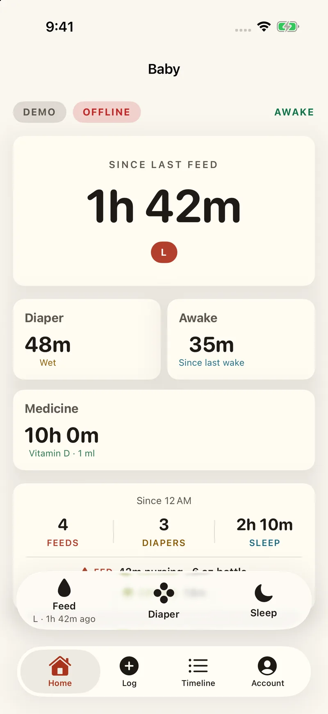
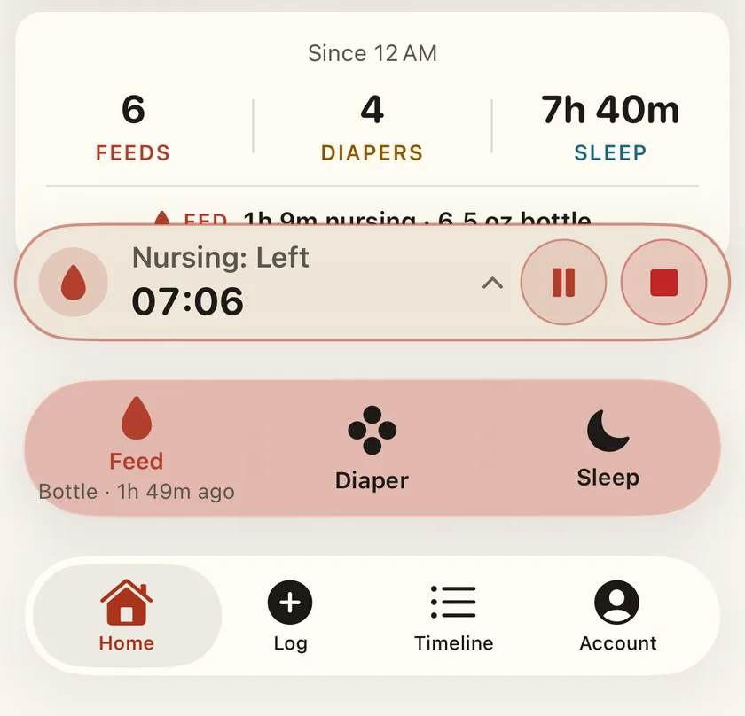
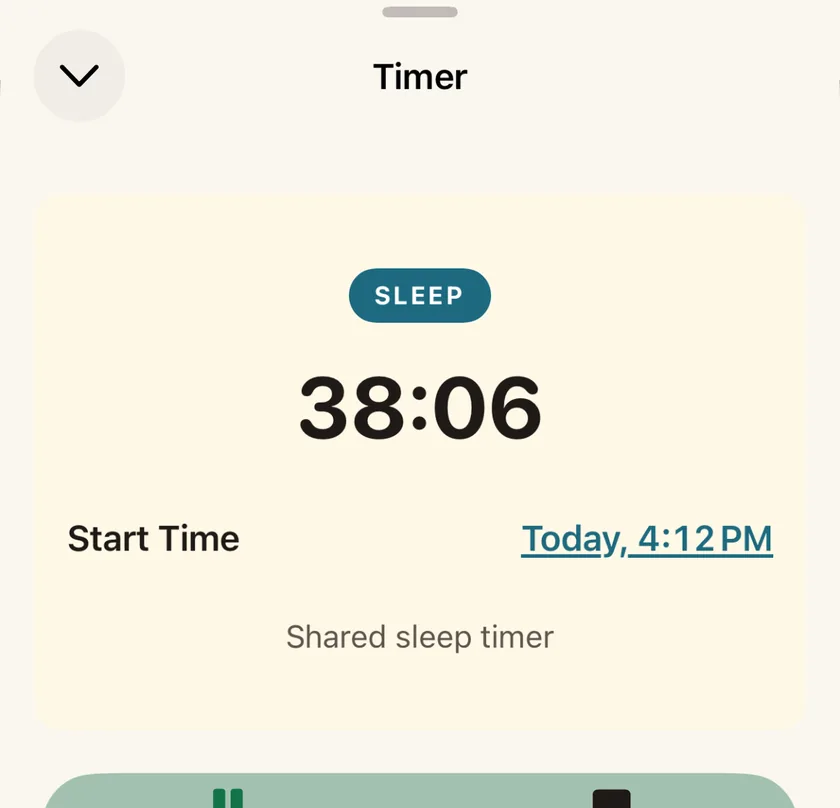
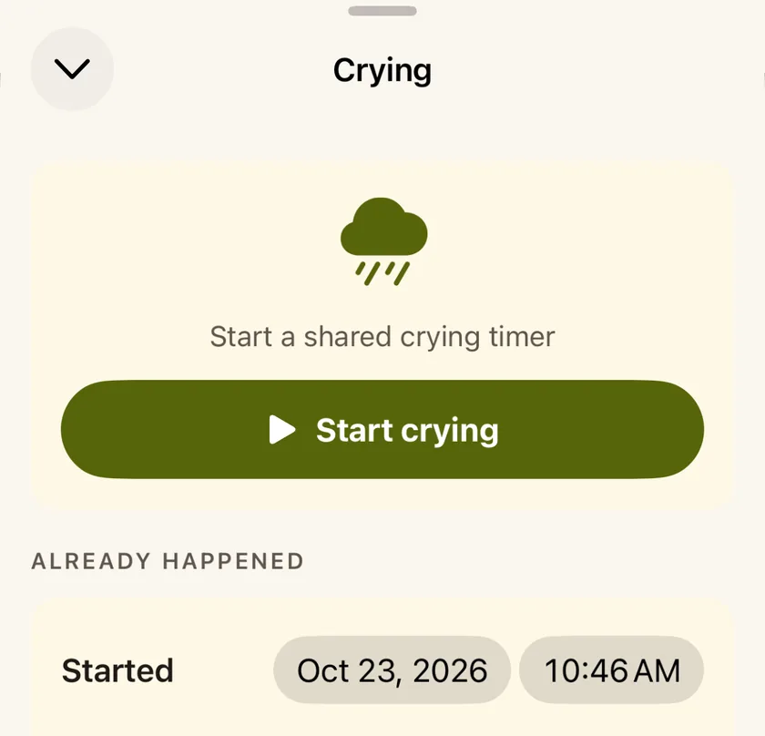
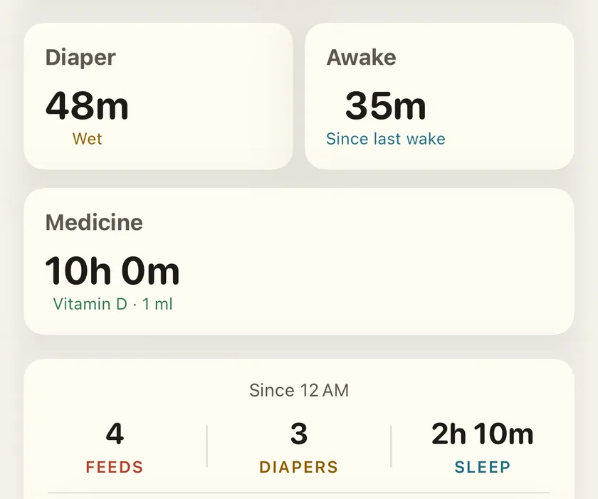
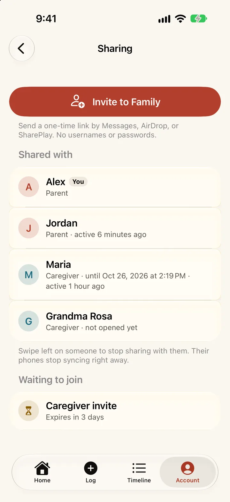
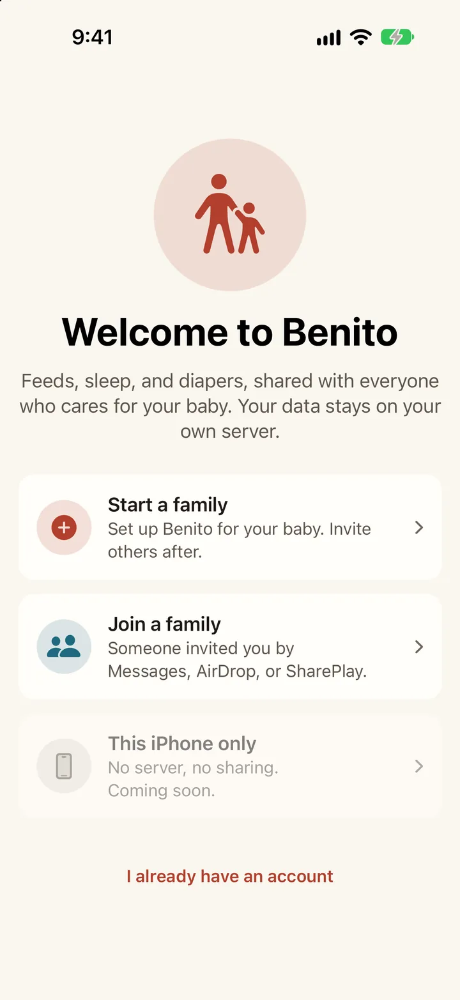

Who fed the baby last?
Benito keeps feeds, sleep and diapers in sync for everyone who helps.
Free and open source, for iPhone, iPad and Apple Watch. Not on the App Store yet, so for now you build it from source.

Feeding LStarted 1:56 PM
07:27
Every log is one tap.
Start a timer on one phone and it runs on all of them within a second.
-

Feeds
Nursing or a bottle, with a timer for each side.
-

Timers
A running timer stays on screen with pause and stop. Anyone in the family can end it.
-

Diapers
Wet, dirty or both. Now, or 15 minutes, 30 minutes or an hour ago.
-

Sleep
A shared sleep timer that anyone can pause or stop.
-

Walks
Walks and car rides get a shared timer too.
-

Crying
A shared crying timer for the long evenings.


The day, at a glance.
- Day summaries
- Feeds, diapers and sleep since midnight, right on the home screen.
- Live Activities
- Running timers on the Lock Screen, in the Dynamic Island and on Apple Watch.
- Siri
- “Siri, Sam started a feed.” Siri asks left, right or bottle.
- Export
- JSON or a CSV for the pediatrician.




Your data stays at home.
Benito syncs through one small server you run: a Mac mini, a Raspberry Pi, a NAS or a VPS.
scripts/macos-service.sh installNo server yet? Pick “This iPhone only” and connect one later.
Agent-ready.
An open Agent Skill lets your own AI agent self-host Benito and read your log.
- Read-only by default
- Backs up, asks first
- Stays on your machine
- Not a doctor: ask your pediatrician
When did he last eat?
4 oz bottle, 2:40 PM.
Crying minutes as CSV?
Wrote crying-minutes.csv. Nothing changed.
Data Not Collected.
- No tracking
- No analytics, ads or crash reporting, here or in the app.
- No account with us
- Each phone joins with its own key. There is no company server.
- Your server
- What you log stays on your phones, and your own server if you add one.
Ready before the next feed.
Free and MIT licensed. Not on the App Store yet, so build it with Xcode for now.
